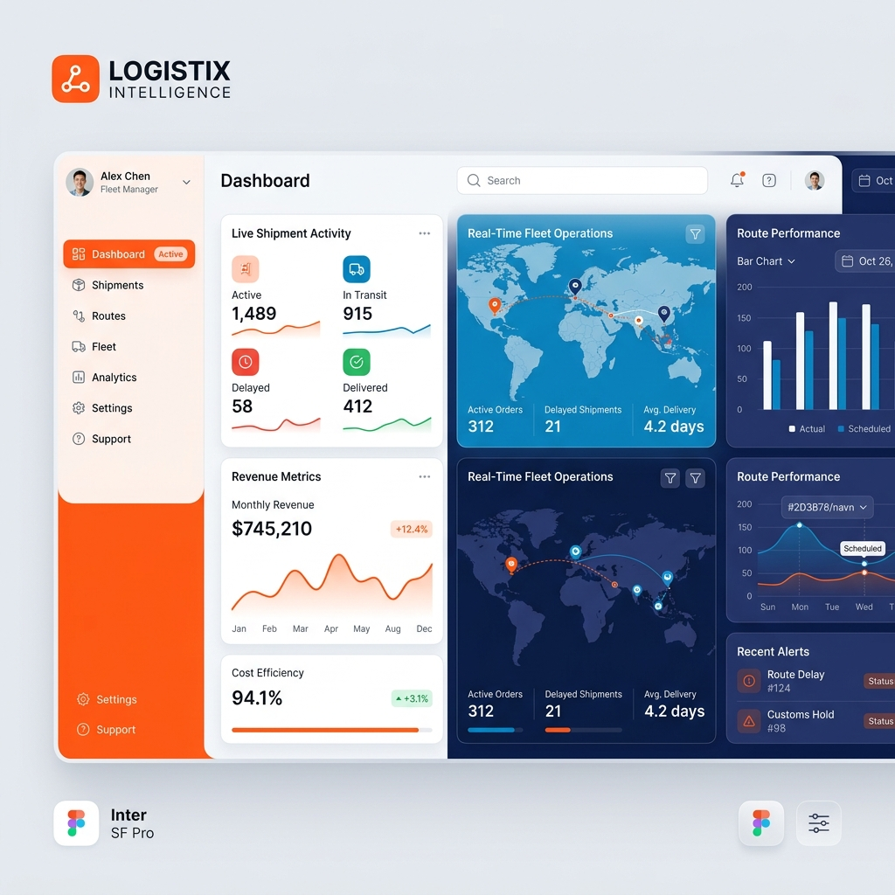

OVERRIDE PROTOCOL
Bem-vindo ao NEXUS. A união simbiótica entre a engenharia robótica da AtlasGR e o fluxo de dados em dobra espacial da TotalTrac. Sinta a interface. Respire a interface.

A plataforma opera sob um motor de interface de estado fluido. Os raios de curvatura, as físicas de sombra de vidro temperado e as equações de espaçamento são absolutas e indivisíveis.
Esqueça botões passivos. A plataforma exige respostas nervosas. Os elementos interativos emitem feedback de choque visual (glow) e resposta auditiva (Áudio UI) em tempo real.